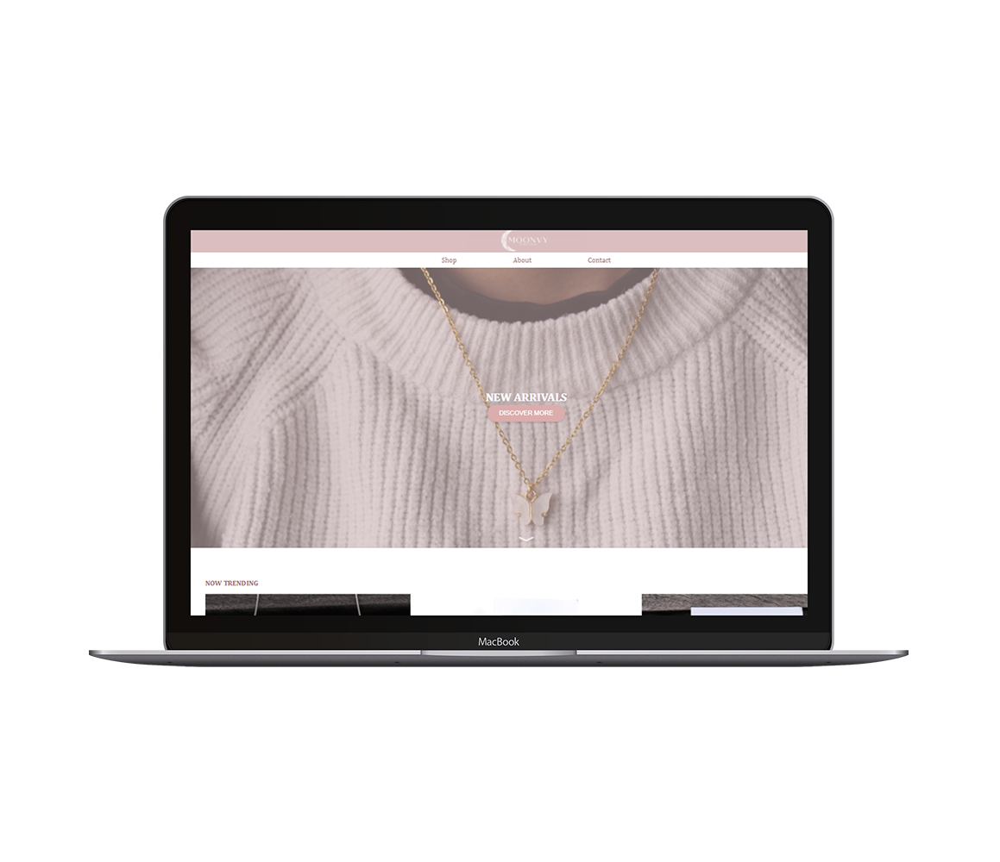

Multimedia Designer
Karolina Krysiak
Frontend Specialist


A little bit about me
I am a student at Business Academy Aarhus on Multimedia Design and Communucation programme. For my specialisation I have chosen frontend as developing working products brings me lots of satisfaction and is something that I am most passionate about.
READ MOREThe projects I have worked on
In Business Academy Aarhus the ability of cooperating in groups is of great importance. Most of the work I have done were group projects nad I always made shure to try to contribute even to the parts I do not specialise in. I never pass the opportunity to learn new things!
READ MORE
